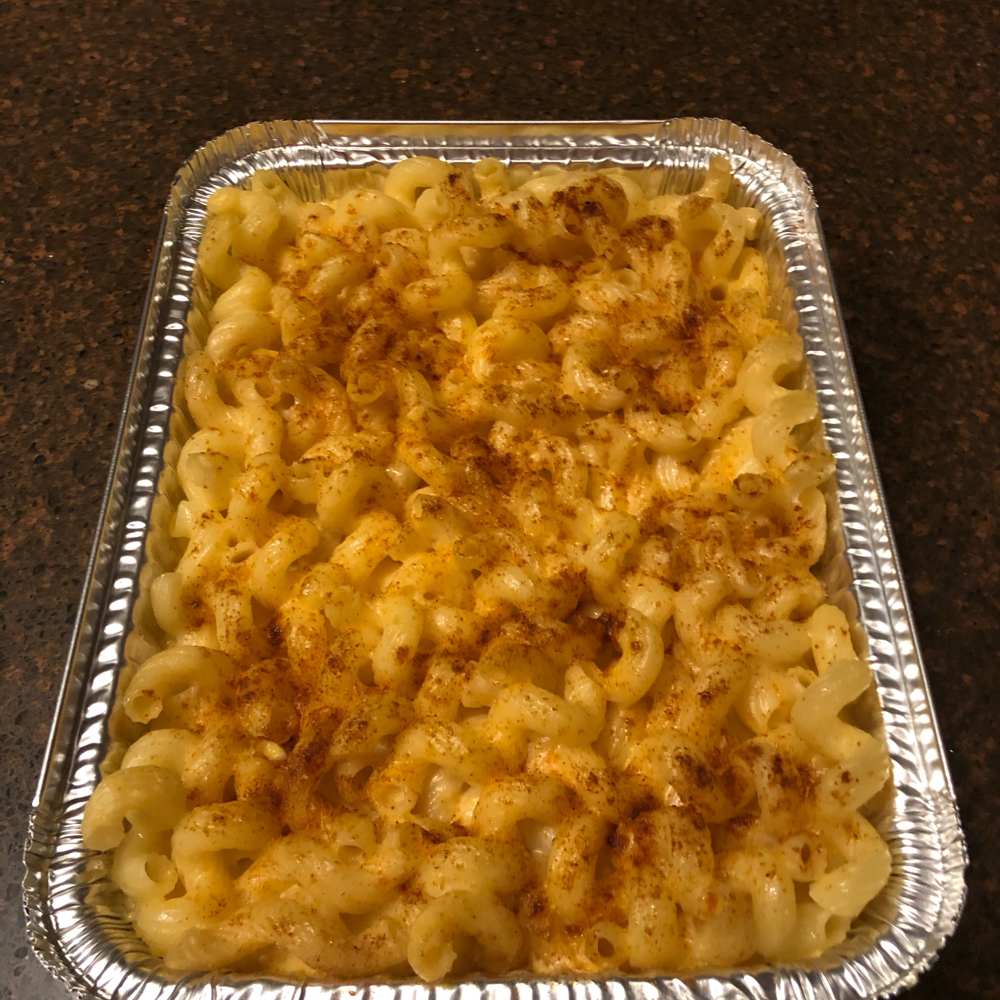

Homemade Mac N Cheese

Description
Cheesy crispy homemade Mac N Cheese. Takes a total of 20 minutes to prepare with a cook time for 30 minutes. 4 servings! Enjoy!
Ingredients
- 8 ounces of elbow macaroni
- 2 cups of shredded sharp Cheddar cheese
- 1/2 cup grated Permesan Cheese
- 3 cups of milk
- 1/4 cup of butter
- 2 and 1/2 tablespoons all-purpose flour
- 2 tablespoons of butter
- 1/2 cup of bread crumbs
- 1 pinch of paprika
Steps
- Cook macaroni according to the package directions. Drain.
- In a saucepan, melt butter or margarine over medium heat. Stir in enough flour to make a roux. Add milk to roux slowly, stirring constantly. Stir in cheeses, and cook over low heat until cheese is melted and the sauce is a little thick. Put macaroni in large casserole dish, and pour sauce over macaroni. Stir well.
- Melt butter or margarine in a skillet over medium heat. Add breadcrumbs and brown. Spread over the macaroni and cheese to cover. Sprinkle with a little paprika.
- Bake at 350 degrees F (175 degrees C) for 30 minutes. Serve.